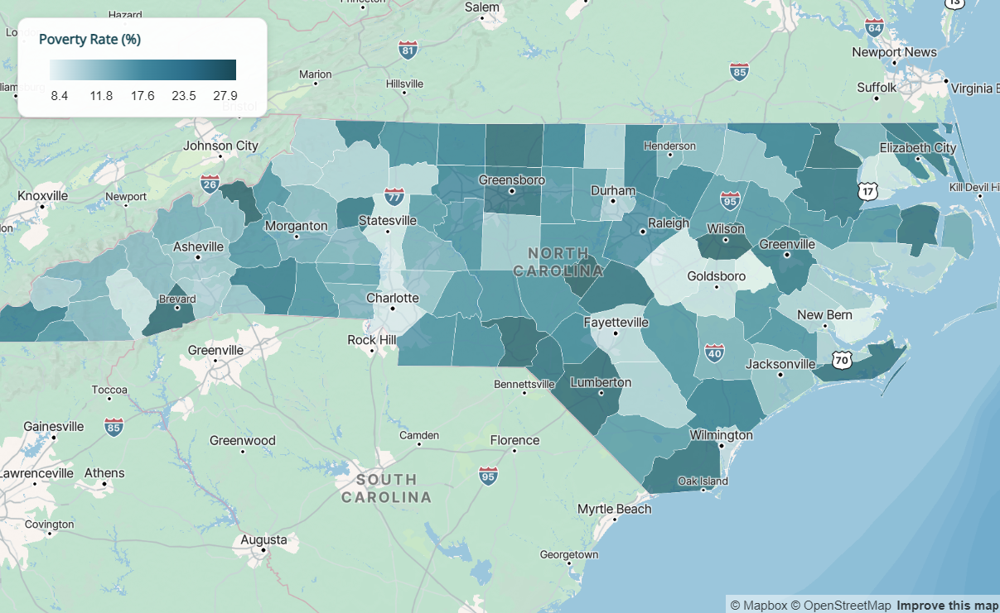
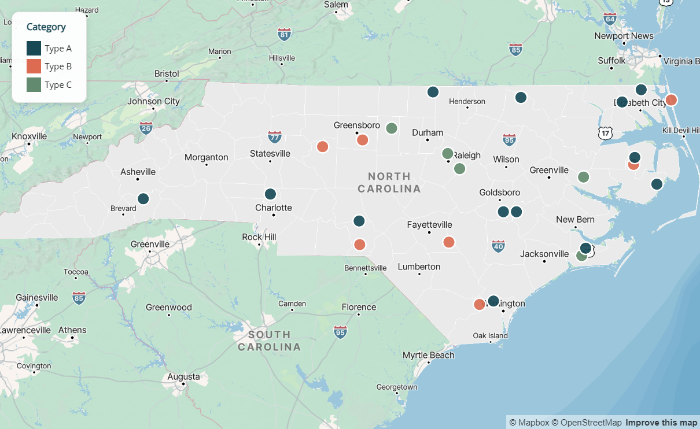
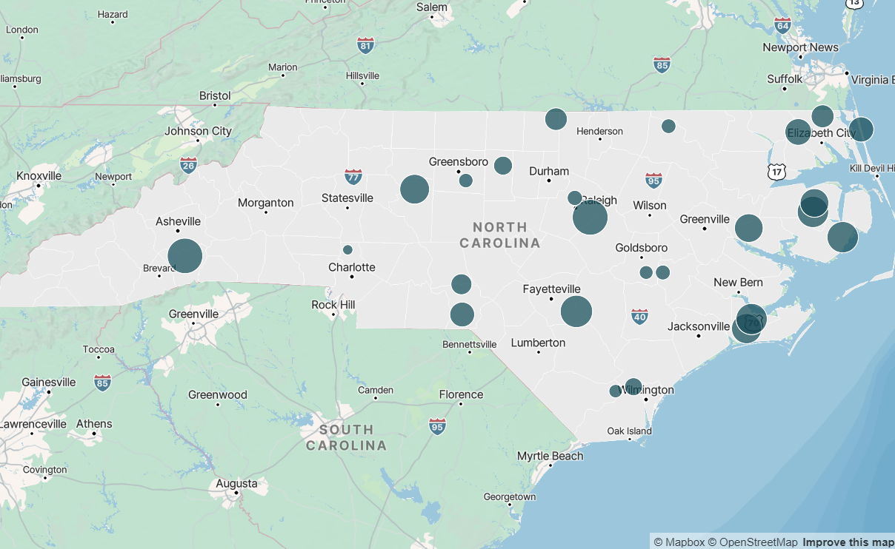
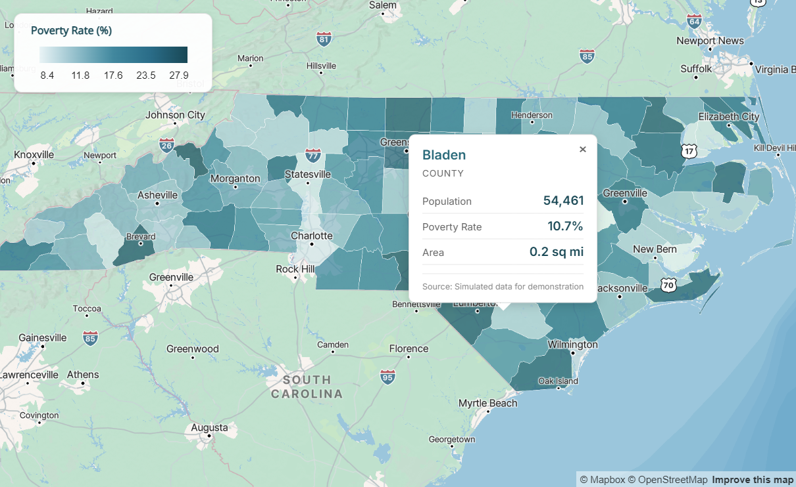
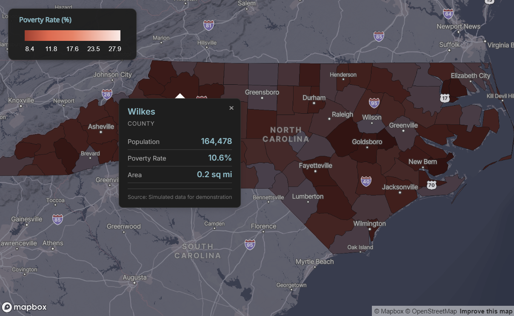
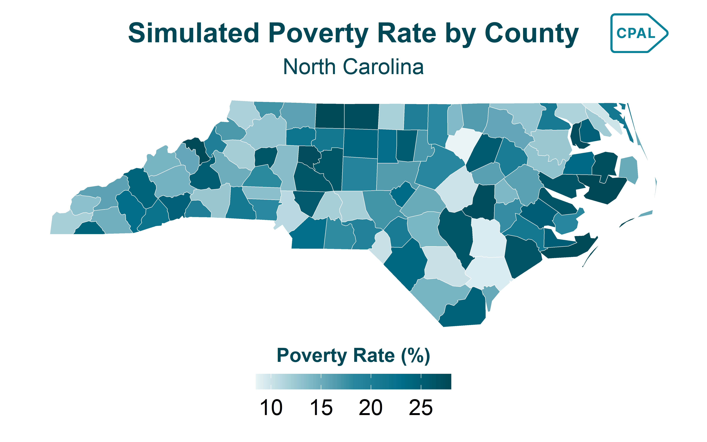
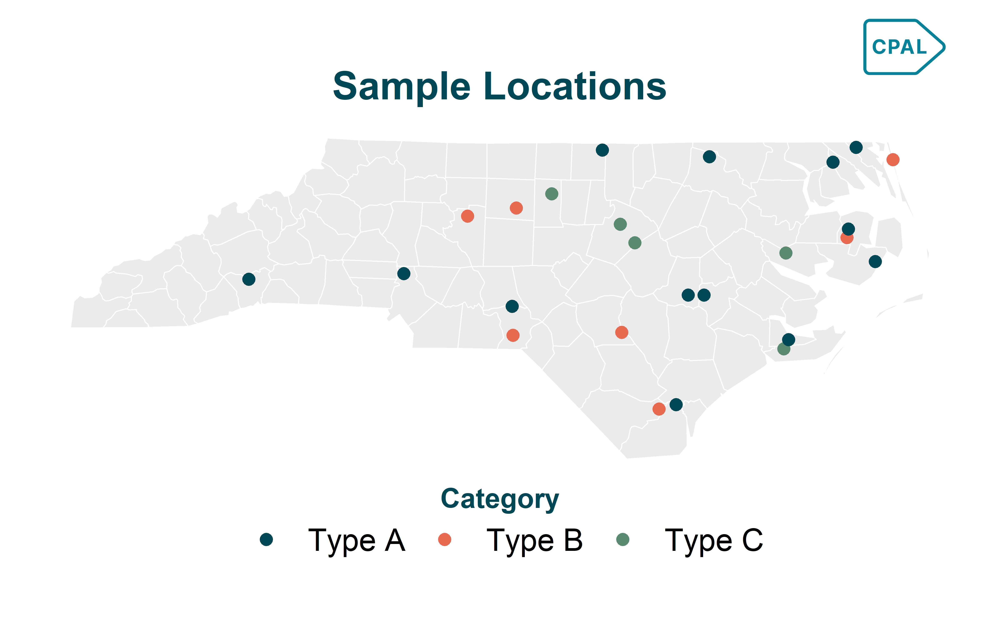

# Open your .Renviron file
usethis::edit_r_environ()
# Add this line (replace with your actual token):
# MAPBOX_PUBLIC_TOKEN="pk.your_token_here"
# Save the file and restart RMaps & Geographic
Creating interactive maps with CPAL styling using mapgl
Interactive maps are essential for exploring geographic data and communicating spatial patterns. The cpaltemplates package integrates with the mapgl package to create professional, CPAL-branded web maps using Mapbox GL JS.
mapgl Maps in Quarto
mapgl maps are interactive HTML widgets that don’t render in static Quarto documents. The examples below show screenshots of the output. For interactive maps, use mapgl in Shiny applications or render your Quarto document as an HTML file with format: html.
Setup
Mapbox Access Token
Interactive maps require a Mapbox access token. Mapbox offers a generous free tier for development and small-scale use.
- Create a free account at mapbox.com
- Navigate to Account > Tokens
- Copy your Default public token (starts with
pk.) - Add it to your
.Renvironfile:
Verify Your Token
After restarting R, verify your token is set:
Sys.getenv("MAPBOX_PUBLIC_TOKEN")Basemap Themes
Initialize a Mapbox GL map with cpal_mapgl(). Four CPAL-branded basemap themes are available:
| Theme | Best For |
|---|---|
"light" |
Most data visualizations, reports (default) |
"dark" |
Dashboards, dark mode applications |
"satellite" |
Land use analysis, geographic context |
"minimal" |
Dense data overlays, monochrome aesthetic |
Light Theme (Default)
Best for most data visualizations and reports:
Show code
cpal_mapgl() |>
fit_bounds(nc)
Dark Theme
Ideal for dashboards and dark mode applications:
Show code
cpal_mapgl(theme = "dark") |>
fit_bounds(nc)
Choropleth Maps
Choropleth maps shade regions based on data values. Use add_fill_layer() with interpolate_palette() for continuous color scales.
Basic Choropleth
Show code
cpal_mapgl() |>
add_fill_layer(
id = "counties",
source = nc,
fill_color = "#008097",
fill_opacity = 0.7,
fill_outline_color = "#FFFFFF",
popup = "NAME",
tooltip = "NAME"
) |>
fit_bounds(nc)
With Color Scale and Styled Legend
For continuous data, use interpolate_palette() with CPAL sequential colors and cpal_legend_style() for branded legends:
Show code
# Get CPAL sequential palette
seq_colors <- cpal_colors("midnight_seq_5")
# Create continuous color scale
color_scale <- interpolate_palette(
data = nc,
column = "poverty_rate",
method = "quantile",
n = 5,
colors = seq_colors
)
# Apply to map with styled legend
cpal_mapgl() |>
add_fill_layer(
id = "poverty",
source = nc,
fill_color = color_scale$expression,
fill_opacity = 0.7,
fill_outline_color = "#FFFFFF",
popup = "popup_html",
tooltip = "NAME"
) |>
add_legend(
"Poverty Rate (%)",
values = get_legend_labels(color_scale, digits = 1),
colors = get_legend_colors(color_scale),
type = "continuous",
style = cpal_legend_style()
) |>
fit_bounds(nc)
Classification Methods
| Method | Use When |
|---|---|
"quantile" |
Data is skewed; want equal counts in each bin |
"equal" |
Data is evenly distributed; want equal-width bins |
"jenks" |
Want natural groupings that minimize within-group variance |
Point Maps
Use add_circle_layer() for point data. Supports color encoding, size encoding, and clustering.
Basic Points
Show code
cpal_mapgl() |>
add_fill_layer(
id = "background",
source = nc,
fill_color = "#EBEBEB",
fill_outline_color = "#FFFFFF"
) |>
add_circle_layer(
id = "locations",
source = sample_points,
circle_color = "#E86A50",
circle_radius = 8,
circle_opacity = 0.8,
circle_stroke_color = "#FFFFFF",
circle_stroke_width = 2,
popup = "name"
) |>
fit_bounds(nc)
Colored by Category
Show code
# Create color expression for categories
category_colors <- list(
"match",
list("get", "category"),
"Type A", "#004855",
"Type B", "#E86A50",
"Type C", "#5A8A6F",
"#999999"
)
cpal_mapgl() |>
add_fill_layer(
id = "background",
source = nc,
fill_color = "#EBEBEB",
fill_outline_color = "#FFFFFF"
) |>
add_circle_layer(
id = "locations",
source = sample_points,
circle_color = category_colors,
circle_radius = 8,
circle_opacity = 0.9,
circle_stroke_color = "#FFFFFF",
circle_stroke_width = 2,
popup = "name",
tooltip = "category"
) |>
add_legend(
"Category",
values = c("Type A", "Type B", "Type C"),
colors = c("#004855", "#E86A50", "#5A8A6F"),
type = "categorical",
style = cpal_legend_style()
) |>
fit_bounds(nc)
Sized by Value
Encode a numeric variable in circle size:
Show code
cpal_mapgl() |>
add_fill_layer(
id = "background",
source = nc,
fill_color = "#EBEBEB",
fill_outline_color = "#FFFFFF"
) |>
add_circle_layer(
id = "locations",
source = sample_points,
circle_color = "#004855",
circle_radius = list(
"interpolate", list("linear"),
list("get", "value"),
100, 5,
500, 12,
1000, 20
),
circle_opacity = 0.7,
circle_stroke_color = "#FFFFFF",
circle_stroke_width = 1,
popup = "name",
tooltip = "value"
) |>
fit_bounds(nc)
Popups & Tooltips
Both add_fill_layer() and add_circle_layer() support interactive popups (click) and tooltips (hover).
| Parameter | Behavior |
|---|---|
popup |
Shows on click. Pass a column name or HTML string column. |
tooltip |
Shows on hover. Pass a column name. |
Styled Popups with Metrics
Use cpal_popup_html_metrics() to create rich, branded popup content with key metrics, and add_cpal_popup_style() to style the popup container:
Show code
library(dplyr)
# Add styled popup column to data
# Use rowwise() so metrics are evaluated per-row
nc <- nc |>
rowwise() |>
mutate(
popup_metrics = cpal_popup_html_metrics(
title = NAME,
subtitle = "County",
metrics = c(
"Population" = scales::comma(population),
"Poverty Rate" = paste0(poverty_rate, "%"),
"Area" = paste0(round(AREA, 1), " sq mi")
),
footer = "Source: US Census Bureau"
)
) |>
ungroup()
# Use in map with popup styling
cpal_mapgl() |>
add_fill_layer(
id = "counties",
source = nc,
fill_color = color_scale$expression,
fill_opacity = 0.7,
popup = "popup_metrics",
tooltip = "NAME"
) |>
add_cpal_popup_style() |>
add_legend(
"Poverty Rate (%)",
values = get_legend_labels(color_scale, digits = 1),
colors = get_legend_colors(color_scale),
type = "continuous",
style = cpal_legend_style()
) |>
fit_bounds(nc)
Popup Functions
| Function | Purpose |
|---|---|
cpal_popup_html_metrics() |
Generate popup HTML with title, subtitle, metrics table, and footer |
add_cpal_popup_style() |
Apply CPAL styling to popup container (background, border, shadow) |
Legend Styling
Use cpal_legend_style() to apply consistent CPAL branding to map legends.
cpal_legend_style(
theme = c("light", "dark"),
position = c("bottom-right", "bottom-left", "top-right", "top-left"),
width = 180
)| Argument | Description |
|---|---|
theme |
Match your map theme: "light" or "dark" |
position |
Legend placement on map |
width |
Legend width in pixels |
The style includes CPAL typography (Inter font), appropriate colors, subtle shadow, and proper spacing.
Dark Theme Example
For dark-themed dashboards, use matching dark styles for the map, legend, and popups. The coral palette works well on dark backgrounds. Key tips:
- Use
fill_opacity = 1.0to prevent the dark basemap from blending through and muting colors - Reverse the palette so lighter shades represent higher values (more visible on dark backgrounds)
Show code
# Use coral palette, reversed so lighter = higher values
coral_colors <- cpal_colors("coral_seq_5", reverse = TRUE)
color_scale_dark <- interpolate_palette(
data = nc,
column = "poverty_rate",
method = "quantile",
n = 5,
colors = coral_colors
)
# Create dark popup content (use rowwise for per-row evaluation)
nc <- nc |>
rowwise() |>
mutate(
popup_dark = cpal_popup_html_metrics(
title = NAME,
subtitle = "County",
metrics = c("Poverty Rate" = paste0(poverty_rate, "%")),
theme = "dark"
)
) |>
ungroup()
# Complete dark theme map
cpal_mapgl(theme = "dark") |>
add_fill_layer(
id = "poverty",
source = nc,
fill_color = color_scale_dark$expression,
fill_opacity = 1.0, # Full opacity prevents dark basemap bleed-through
fill_outline_color = "#333333",
popup = "popup_dark",
tooltip = "NAME"
) |>
add_cpal_popup_style(theme = "dark") |>
add_legend(
"Poverty Rate (%)",
values = get_legend_labels(color_scale_dark, digits = 1),
colors = get_legend_colors(color_scale_dark),
type = "continuous",
style = cpal_legend_style(theme = "dark")
) |>
fit_bounds(nc)
Emissive Strength for 3D Lighting
When using mapgl’s 3D features or dark themes, you can enhance layer visibility with emissive strength properties. These make colors appear to emit light, which is especially effective on dark basemaps.
Emissive Properties by Layer Type
| Layer Type | Emissive Property | Example |
|---|---|---|
| Fill (polygons) | fill_emissive_strength |
Choropleth maps |
| Circle (points) | circle_emissive_strength |
Point maps |
| Line | line_emissive_strength |
Route/path maps |
| Symbol/Icon | icon_emissive_strength |
Marker icons |
| Text | text_emissive_strength |
Labels |
Recommended Values
1.0- Full emissive strength, colors appear vibrant and luminous0.5- Subtle glow effect0.0- No emissive effect (default)
Example: Dark Theme with Emissive Fill
Show code
cpal_mapgl(theme = "dark") |>
add_fill_layer(
id = "regions",
source = nc,
fill_color = color_scale$expression,
fill_opacity = 1.0,
fill_emissive_strength = 1.0, # Makes colors glow
fill_outline_color = "#333333"
) |>
fit_bounds(nc)Example: Points with Emissive Glow
Show code
cpal_mapgl(theme = "dark") |>
add_circle_layer(
id = "locations",
source = sample_points,
circle_color = "#E86A50",
circle_radius = 10,
circle_emissive_strength = 1.0, # Points appear to glow
circle_stroke_color = "#FFFFFF",
circle_stroke_width = 1
) |>
fit_bounds(nc)
When to Use Emissive Strength
Emissive strength is most impactful on dark theme maps where standard colors can appear muted. On light themes, the effect is less noticeable since the basemap is already bright.
Static Maps with ggplot2
For static maps in reports and presentations, use theme_cpal_map() with ggplot2 and sf.
Choropleth
Show code
p1 <- ggplot(nc) +
geom_sf(aes(fill = poverty_rate), color = "white", linewidth = 0.2) +
scale_fill_cpal(palette = "midnight_seq_5", discrete = FALSE) +
labs(
title = "Simulated Poverty Rate by County",
subtitle = "North Carolina",
fill = "Poverty Rate (%)"
) +
theme_cpal_map() +
theme(
legend.title.position = "top",
legend.title = element_text(hjust = 0.5)
)
add_cpal_logo(p1)
Point Overlay
Show code
p2 <- ggplot() +
geom_sf(data = nc, fill = "#EBEBEB", color = "white") +
geom_sf(data = sample_points, aes(color = category), size = 3) +
scale_color_cpal(palette = "main") +
labs(
title = "Sample Locations",
color = "Category"
) +
theme_cpal_map() +
theme(
legend.title.position = "top",
legend.title = element_text(hjust = 0.5)
)
add_cpal_logo(p2)
Troubleshooting
Map Not Displaying
Check Mapbox token:
Show code
# Should return your token, not empty string
Sys.getenv("MAPBOX_PUBLIC_TOKEN")Verify sf data is valid:
Show code
# Check CRS
sf::st_crs(my_data)
# Transform to WGS84 if needed
my_data <- sf::st_transform(my_data, 4326)Slow Rendering
For large datasets, simplify geometries:
Show code
# Simplify with sf
data_simple <- sf::st_simplify(my_data, dTolerance = 100)
# Or use rmapshaper for better results
data_simple <- rmapshaper::ms_simplify(my_data, keep = 0.1)Colors Not Showing
Ensure you’re passing the expression from interpolate_palette():
Show code
# Correct - use $expression
fill_color = color_scale$expression
# Incorrect - don't pass the whole object
fill_color = color_scaleFunction Reference
| Function | Purpose |
|---|---|
cpal_mapgl() |
Initialize CPAL-themed Mapbox GL map |
cpal_legend_style() |
Get styled legend options for add_legend() |
cpal_popup_html_metrics() |
Generate popup HTML with metrics |
add_cpal_popup_style() |
Apply CPAL styling to popup container |
Next Steps
- Colors & Palettes - Complete color system documentation
- Themes & Styling - ggplot2 theme customization
- mapgl Documentation - Full mapgl package reference